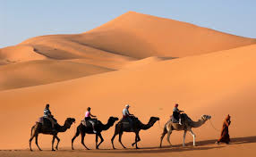
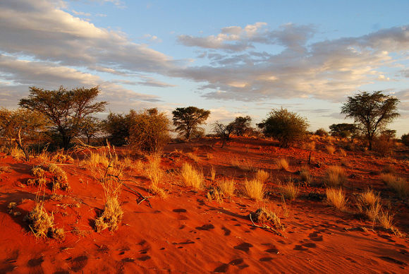

¡Bienvenido a la página 2! En esta página, te invitamos a una emocionante aventura en el desierto. Explora vastas extensiones de dunas de arena, descubre oasis escondidos y maravíllate con el espectáculo del desierto bajo la luz de la luna.
1. El desierto del Sahara
El gran desierto ocupa territorio en hasta nueve países distintos. Es el más cálido del planeta y el más grande si excluimos la Antártida y el Ártico. Tiene mares de dunas fascinantes y únicos en el mundo. Ideal para travesías en 4×4 o excursiones en camellos.
2. El desierto Kalahari
El desierto más fascinante del sur de África y los viajeros podrán divisar animales como los suricatas o toparse con etnias como los bosquimanos.
3. El desierto Wadi Rum
Uno de los desiertos más hermosos del mundo por su característico color rojizo y las hermosas formas que el viento le ha dado a las rocas.